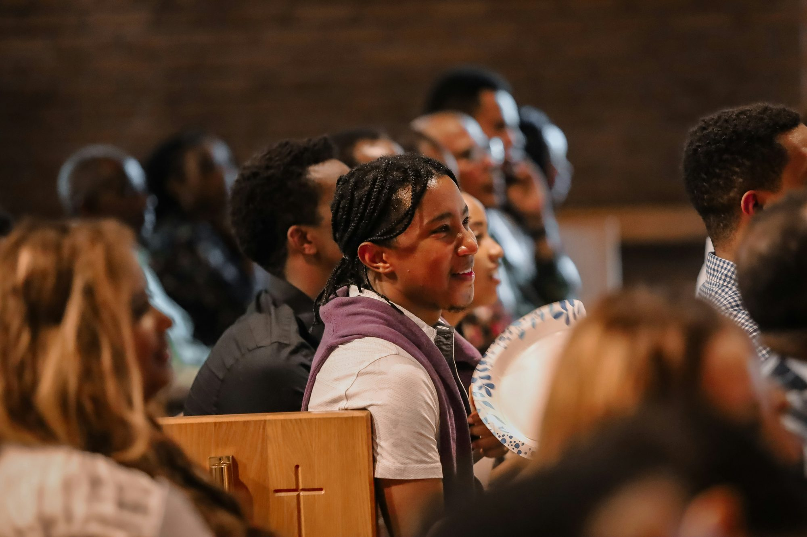
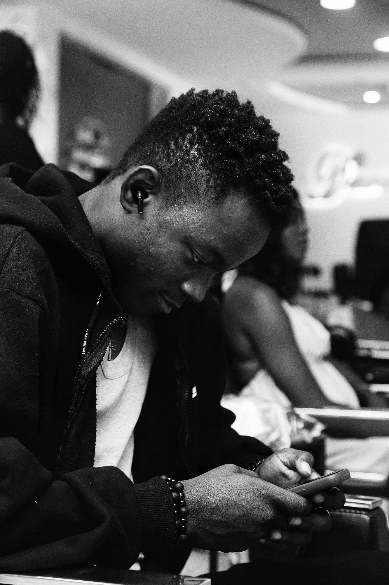
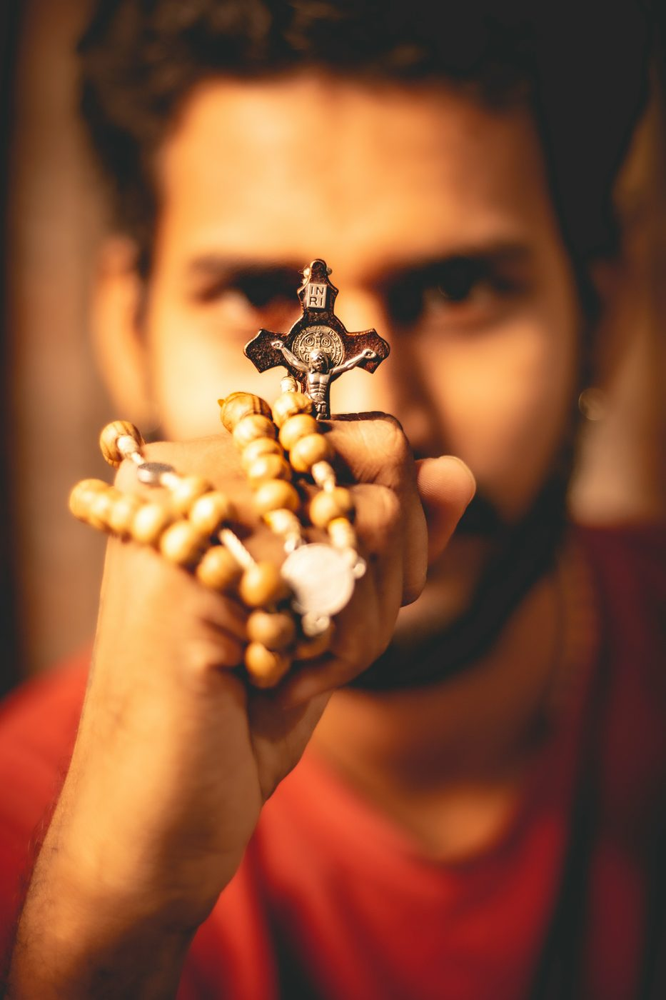
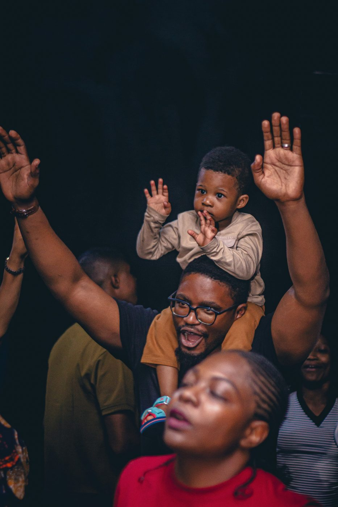
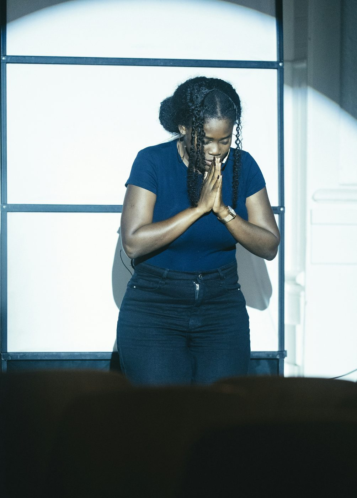

Every friend of Mary is a stranger we cannot wait to pray for, care for, and gather with.
Strangers for Mary is a network of Catholics around the world, linked like beads on a Rosary. We help people live out their Catholic faith every single day, out loud, alongside a community that shares the same values and the same hunger for Christ.

Every decade is a gift from one stranger to another.
Sunday is easy. Monday is where we lose.

You go to Mass. You sing, you pray, you mean every word. Then you walk out of the church doors and the week begins to pull: old habits, easy compromises, the quiet drift away from Christ that nobody around you seems to notice.
Most of us do not stop believing. We just stop living it between Sundays. Strangers for Mary is a way back. Not a lecture and not a programme, but a daily path to Christ, walked with Mary and with strangers who are walking it too, one Rosary at a time.
A Rosary a day, prayed together, is a road back to Christ.
Different cities. Different languages. Different stories.
Most of us will never stand in the same room. But every one of us has run to the same Mother, and found her already waiting.
Whoever identifies with her,
identifies with us.



Not another prayer group.
There are many good Christian communities. Strangers for Mary is built differently, on purpose.
- {{r.n}} {{r.title}} {{r.text}}

We pray.
Each week, before 6 pm on Sunday, you add your intention to the many already in the network, and trust us to pass it on. Monday to Saturday, a different stranger takes their turn to pray a full Rosary for you, every single day. And every day you do the same for someone else. On Sunday, you carry one of them with you to Mass.
See how we pray6
strangers you pray for, a full Rosary for each.
Every decade is a gift from one stranger to another.
We give.
We are built on the charity of small actions. A meal. A hospital visit. A school fee. A few hours of work. Each one small, each one offered for someone waiting to receive it. And we give only what we have worked for: every campaign is carried by the effort of the strangers themselves.
See how we give
Many small hands. One real gift.
Charity that costs us something is charity that means something.
 Twice a year
Twice a year
We gather.
Twice a year, the strangers meet. Not to become familiar, since a room can hold a hundred Pauls and still keep every prayer's secret, but to share the communion our prayers have made us hungry for. We pray, praise and worship together, talk honestly about what makes daily prayer hard, go deeper into the faith and break bread with the strangers we trusted to care for ours. It is always a party for our Mother.
See how we gatherWe arrive as strangers. We leave stronger.
They will never be able to thank you.
Your intention travels with your baptism name and nothing more. In a network with a thousand Marys and a thousand Pauls, nobody can trace a prayer back to its owner. So when you pray, you pray for someone who can never repay you. That is the point. With every decade we do what Mary did at Cana: we carry to Jesus a problem that was never ours to carry.
A chain of Rosaries around the world that never breaks.
We dream of a day when every intention shared with us is prayed for, every day, by someone who loves Mary. When no hospital bed, exam hall, empty kitchen or broken heart goes unprayed for. When a whole generation of Catholics, in every country, learns to live their faith every day because a stranger once needed them to.
It starts with one Rosary. Yours.
Take your place in the network.
Youkaris, our app, opens soon. Sign up today and you will be invited in on the first day, ready to add your first intention and receive your first strangers.
- Open to every Catholic, everywhereWherever you are, there is a place in the chain for you.
- Known only by your baptism nameYour full name stays private. Your intention travels with your baptism name only.
- Leave any timeOne click and you are off the list.
Welcome, stranger.
You are on the list. The day Youkaris opens, you will be among the first to know. If you applied for the core team, someone will be in touch soon.
Now do what every stranger does.
Pass it on.